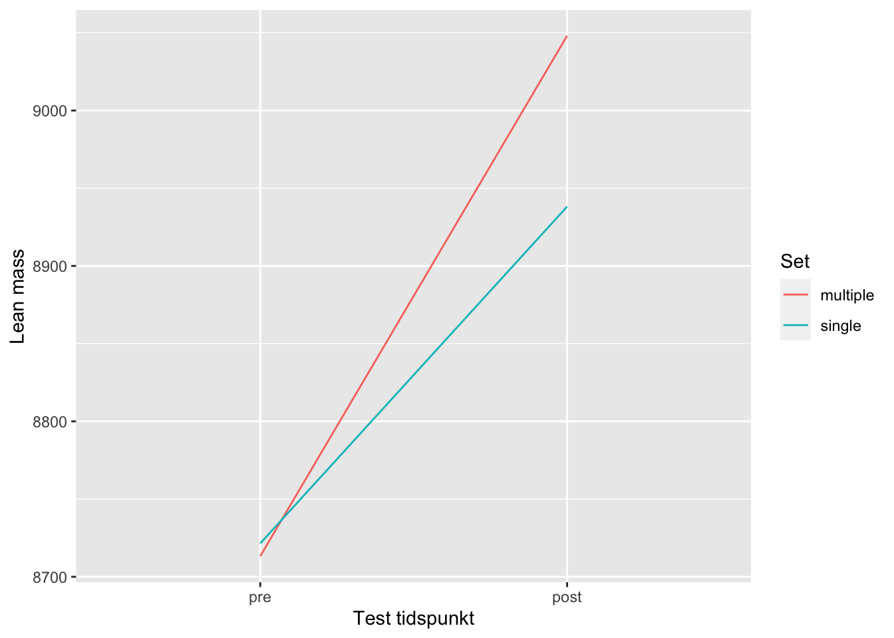
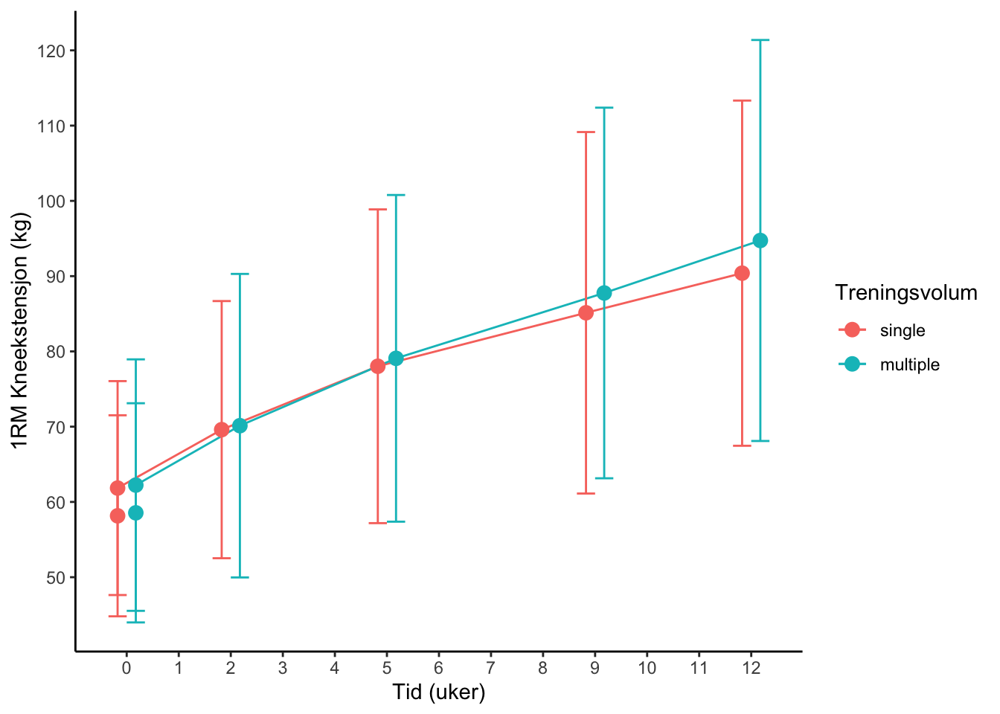

| FP karaktristikker | |||
| sex | Alder (år) |
Høgde (cm) |
Vekt (kg) |
|---|---|---|---|
| female | 22.20 | 167.27 | 64.41 |
| male | 23.73 | 183.87 | 77.71 |
| Verdier er i gjennomsnitt | |||
6 Repeterte forsøk
Introduksjon
Målet med denne studien var å se på effekten av enkle og flere sett trenings protokoller sin effekt på styrke, muskel hypertrofi og fibertype sammensetning. Vi vill også se hvordan disse faktorene vill påvirke kropp sammensettingen til forsøkspersonene, når de går fra å trene lite til mer jevnlig styrketrening. Dette vill alle gi oss en bedre forstålese i for utviklingen i det å trene enkle og flere sett trening.
I denne studien skal vi se på hvordan ulike treningvolum påvirker styrke og muskelvekst. Det er gjort en del tidligere forsking på hvordan en skal bygge opp sine styrke økter. Før vi kan diskutere om det er forskjell mellom ulike sett, så er det viktig å understreke hva vi er ute etter. Vi ønsker å se om hva som kan skape den største framgangen. Når en har sett på dette tidligere, så er det flere studier som har funne at 3 sett gir en større framgang enn hva 1 sett gir (kramer_effects_1997?; kelly_effect_2007?; radaelli_dose-response_2015?) . Vi ser også at det er studier som har sett på enkle vs. flere sett der forsøkspersonen består i sin helhet av kvinner. I den ene studien viste ikke en like klar framgang som studien med mannlige forsøkspersoner. Studien viste framgang i 1RM for begge gruppen som både enkle sett og flere sett. Men vi må i denne studien stille spørsmål om det er forskjell mellom kvinner og menn. Men denne rapporten inneholder en svak statistisk del, som gjør at det er usikker med å trekke konklusjoner ut fra denne rapporten (kraemer_varied_1995?). Men ser vi på studier med kvinner som er gjort med en erfaring innenfor styrke. Finner vi noe av de samme resultatene som vi ser hos menn. I et hel kropps program så en at fikk en overlegen styrke forbedring hos de som trente 3 sett i sammenligning med 1 sett (schlumberger_single-_2001?).
Metode
Deltakere
For denne studien ble det rekruttert 41 menn og kvinner. Det var enkle kriterier for å kunne passe inn i i utvalget av forsøkspersoner. For å delta måtte en være ikke røykende og mellom 18 og 40 år. En måtte også sette av tid for å kunne gjennomføre 12 uker med trening og tilhørende tester. Det var noen kriterier som ville ekskludere personer fra studien. Personer som ikke tålte bedøvelse, hadde hatt mer enn 1 styrke økt i uka de siste 12 månedene eller hadde muskelskader eller fra tidligere fikk ikke mulighet til å delta. I forbindelse med data analysen ble sju personer utelatt på grunn av en manglende gjennomføring av de 12 ukene med trening.
Trenings intervensjon
For alle 41 forsøkspersonene besto trening av et 12 ukers styrketrenings program for hele kroppen. Alle deltakerne gjennomførte treningen mellom september og november. Treningsøktene ble gjennomført med standardisert oppvarming på 5 min. Før en gjennomførte 10 repetisjoner med armhevinger, sit-ups og rygg hev i maskin og knebøy. Oppvarmingen ble avsluttet med avsluttet et sett med 10 repetisjoner på 50 prosent av 1 RM for hver styrke øvelse. For bein øvelsene ble de gjennomført slik at beina tilfeldig ble tildelt trenings volum, slik at en bruker det en som kontroll for det andre benet. Bein øvelsene som ble gjennomført var en fots beinpress, bein curl, kne extension, en gjorde samme øvelse på begge bein. For foten som hadde fått tildelt 1 sett, ble dette gjort mellom 2 og 3 sett. Utover disse bein øvelsene ble det gjort øvelser for overkropp, dette var bilateral benkpress, ned trekk, så kunne en velge mellom skulder press eller sittende roing. Av disse overkropps øvelsene, ble det gjort 2 sett hver.
Tester
For prosjektet ble det gjort tester innenfor flere områder som hadde relevans for prosjektet. Det blei gjort tester innenfor styrke, tverrsnitt av muskel, kropps sammensetning, hormonelle målinger, biopsi av muskel vev.
Muskelstyrke
For å teste den ensidige isokinetiske og isometriske muskelstyrken ble det brukt dynamometer. Den iskinetic torken ble målt med tre vinkel hastigheter på 60 grader, 120 og 140 grader. For at forsøksperson skal vite hva de går til, så fikk de prøve tre maksimale forsøk før selve testen.
Den maksimale muskelstyrken ble testet ved at hvert av beina ble testet separat i beinpress maskin. Det ble også gjort 1 RM kne ekstensjons maskin. Her ble det også gjort tre oppvarmingsett på submaksimale belastninger. Det var den maksimale verdien for kvar av testene som ble brukt i analysene til slutt. For at de siste øktene ikke skulle påvirke for mye, ble testene ikke gjort før 48 timer etter siste treningsøkt.
Muskel tverrsnitt og kroppsamesetning
En var i denne studien heldig å fikk bruke MRI til å undersøker tverrsnittet av kneekstensorene. En så i dette tilfellet på vastus lateralis, medjalis, intermedius og rectus femoris. Dette ble gjort både før og etter trenings intervensjonen. En fikk analysert analyse av personenes kropp sammensetning ved bruk av DXA. Før både DXA og MRI ble forsøkspersonen bedt å faste for 2 timer og ingen hard fysisk aktivitet 48 timer før testene.
Muskel biopsi
Biopis ble tatt bilateralt fra vastus lateralis. Dette ble gjort under bedøvelse, der en brukt et fjær ladet biopsi instrument(Bård Magnum, Bård, Rud, Norway). Det ble gjort tiltak for å sikre en best mulig rehabilitere, med prøver på samme tidspunkt og at en hadde standardisert måltid på forhånd. Prøvene ble raskt fryst ned, for lagring fram til analysene ble gjort
Dataanalyse og statistikk
Forsøkspersoner som ikke gjennomførte helle treningsperioden, ble ikke inkludert fra den statistiske analysen i etterkant av treningsperioden. Vi ønsker i dette tilfellet å se på utviklingen av fettfri masse i beina, mellom 1 og 3 sett. I kombinasjonen med dette ser vi også på hvilket ben som har en størst utvikling i forhold til kor mange sett den trener. Disse tallene er presentert som gjennomsnitt med standardavvik. Vi bruker en tosidig t-test for å se om det er en signifikant forskjell mellom de to beina, for den fettfrie massen.
Resultat
Som vi ser ut i fra Figure 6.1 så er det en økning for både for beinet som trente 1 sett og beine som trente flere sett. Vi får en signifikant forskjell mellom et sett og flere sett med en p verdi på 0,0359.


I Figure 6.2 ser vi 1 RM verdier i kne ekstensjon der en har gjort tester ved pre test, økt 1, i trenings uke 2, 5 og 9 og ved post test. Vi ser at det er liten forskjell i starten av trenings intervensjonen, før en ser at de som har trent flere sett har en større økning. T -test bør inn her
Diskusjon
Utgangspunktet for denne studien var å se på forskjellen mellom enkle og flere sett, og hvordan de ville påvirke flere forskjellige faktorer. Gjennom vår 12 uker lange periode med styrketrening, har vi sett at 3 sett gir signifikant større framgang enn 1 sett i fett fri masse. Vi har også sett at 3 sett gir en større framgang i 1 RM kne ekstensjon, men at dette ikke er noe signifikant forskjell mellom 1 og 3 sett. Noe som samsvarer med resultatene vi finner i tidligere studier. Der alle har sett at det et større trenings volum vil være med på å skape en større framgang enn mindre trenings volum(kraemer_varied_1995?), (schlumberger_single-_2001?), (kelly2007?). Selv om vi i vår studie inkluderte beintreningen i et fullkroppprogram, så ble det ikke trent forskjellige repetisjoner for armene. Det ble heller ikke gjort testing av muskel styrken, slik at vi ikke vet om dette er noe som kan bekreftes for overkropp.